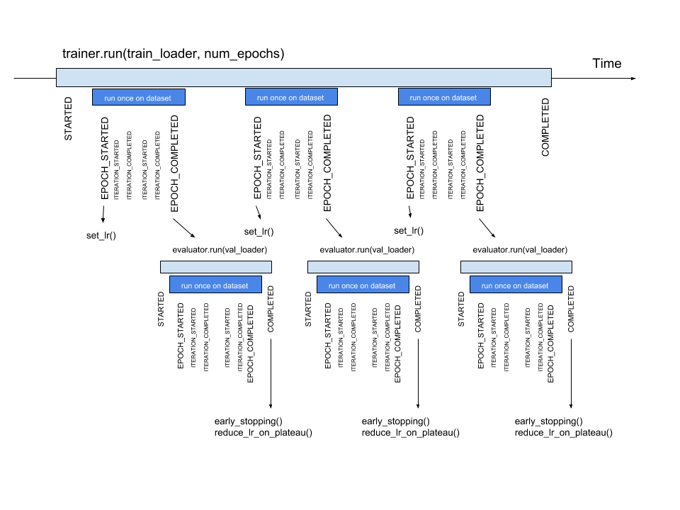

Concepts#
Engine:#
The essence of the framework is the class Engine, an abstraction that loops a given number of times over
provided data, executes a processing function and returns a result:
while epoch < max_epochs:
# run an epoch on data
data_iter = iter(data)
while True:
try:
batch = next(data_iter)
output = process_function(batch)
iter_counter += 1
except StopIteration:
data_iter = iter(data)
if iter_counter == epoch_length:
break
Thus, a model trainer is simply an engine that loops multiple times over the training dataset and updates model parameters. Similarly, model evaluation can be done with an engine that runs a single time over the validation dataset and computes metrics.
For example, model trainer for a supervised task:
def train_step(trainer, batch):
model.train()
optimizer.zero_grad()
x, y = prepare_batch(batch)
y_pred = model(x)
loss = loss_fn(y_pred, y)
loss.backward()
optimizer.step()
return loss.item()
trainer = Engine(train_step)
trainer.run(data, max_epochs=100)
The type of output of the training step (i.e. loss.item() in the above example) is not restricted. Training step
function can return everything user wants. Output is set to trainer.state.output and can be used further for any type of processing.
Note
By default, epoch length is defined by len(data). However, a user can also manually define the epoch length as a
number of iterations to loop over. In this way, the input data can be an iterator.
trainer.run(data, max_epochs=100, epoch_length=200)
If data is a finite data iterator with unknown length (for user), argument epoch_length can be omitted and it
will be automatically determined when data iterator is exhausted.
Training logic of any complexity can be coded with train_step method and a trainer can be constructed using this method.
Argument batch in train_step function is user-defined and can contain any data required for a single iteration.
model_1 = ...
model_2 = ...
# ...
optimizer_1 = ...
optimizer_2 = ...
# ...
criterion_1 = ...
criterion_2 = ...
# ...
def train_step(trainer, batch):
data_1 = batch["data_1"]
data_2 = batch["data_2"]
# ...
model_1.train()
optimizer_1.zero_grad()
loss_1 = forward_pass(data_1, model_1, criterion_1)
loss_1.backward()
optimizer_1.step()
# ...
model_2.train()
optimizer_2.zero_grad()
loss_2 = forward_pass(data_2, model_2, criterion_2)
loss_2.backward()
optimizer_2.step()
# ...
# User can return any type of structure.
return {
"loss_1": loss_1,
"loss_2": loss_2,
# ...
}
trainer = Engine(train_step)
trainer.run(data, max_epochs=100)
For multi-models training examples like GAN’s, please, see our Examples.
Events and Handlers:#
To improve the Engine’s flexibility, an event system is introduced which facilitates interaction on each step of
the run:
engine is started/completed
epoch is started/completed
batch iteration is started/completed
Complete list of events can be found at Events.
Thus, a user can execute a custom code as an event handler. Handlers can be any function: e.g. lambda, simple function, class method etc. The first argument can be optionally engine, but not necessarily.
Let us consider in more detail what happens when run() is called:
fire_event(Events.STARTED)
while epoch < max_epochs:
fire_event(Events.EPOCH_STARTED)
# run once on data
for batch in data:
fire_event(Events.ITERATION_STARTED)
output = process_function(batch)
fire_event(Events.ITERATION_COMPLETED)
fire_event(Events.EPOCH_COMPLETED)
fire_event(Events.COMPLETED)
At first, “engine is started” event is fired and all its event handlers are executed (we will see in the next paragraph how to add event handlers). Next, while loop is started and “epoch is started” event occurs, etc. Every time an event is fired, attached handlers are executed.
Attaching an event handler is simple using method add_event_handler() or
on() decorator:
trainer = Engine(update_model)
trainer.add_event_handler(Events.STARTED, lambda _: print("Start training"))
# or
@trainer.on(Events.STARTED)
def on_training_started(engine):
print("Another message of start training")
# or even simpler, use only what you need !
@trainer.on(Events.STARTED)
def on_training_started():
print("Another message of start training")
# attach handler with args, kwargs
mydata = [1, 2, 3, 4]
def on_training_ended(data):
print(f"Training is ended. mydata={data}")
trainer.add_event_handler(Events.COMPLETED, on_training_ended, mydata)
Event handlers can be detached via remove_event_handler() or via the RemovableEventHandle
reference returned by add_event_handler(). This can be used to reuse a configured engine for multiple loops:
model = ...
train_loader, validation_loader, test_loader = ...
trainer = create_supervised_trainer(model, optimizer, loss)
evaluator = create_supervised_evaluator(model, metrics={"acc": Accuracy()})
def log_metrics(engine, title):
print(f"Epoch: {trainer.state.epoch} - {title} accuracy: {engine.state.metrics['acc']:.2f}")
@trainer.on(Events.EPOCH_COMPLETED)
def evaluate(trainer):
with evaluator.add_event_handler(Events.COMPLETED, log_metrics, "train"):
evaluator.run(train_loader)
with evaluator.add_event_handler(Events.COMPLETED, log_metrics, "validation"):
evaluator.run(validation_loader)
with evaluator.add_event_handler(Events.COMPLETED, log_metrics, "test"):
evaluator.run(test_loader)
trainer.run(train_loader, max_epochs=100)
Event handlers can be also configured to be called with a user pattern: every n-th events, once or using a custom event filtering function:
model = ...
train_loader, validation_loader, test_loader = ...
trainer = create_supervised_trainer(model, optimizer, loss)
@trainer.on(Events.ITERATION_COMPLETED(every=50))
def log_training_loss_every_50_iterations():
print(f"{trainer.state.epoch} / {trainer.state.max_epochs} : {trainer.state.iteration} - loss: {trainer.state.output:.2f}")
@trainer.on(Events.EPOCH_STARTED(once=25))
def do_something_once_on_25_epoch():
# do something
def custom_event_filter(engine, event):
if event in [1, 2, 5, 10, 50, 100]:
return True
return False
@engine.on(Events.ITERATION_STARTED(event_filter=custom_event_filter))
def call_on_special_event(engine):
# do something on 1, 2, 5, 10, 50, 100 iterations
trainer.run(train_loader, max_epochs=100)
Custom events#
The user can also define custom events. Events defined by user should inherit from EventEnum
and be registered with register_events() in an engine.
from ignite.engine import EventEnum
class CustomEvents(EventEnum):
"""
Custom events defined by user
"""
CUSTOM_STARTED = 'custom_started'
CUSTOM_COMPLETED = 'custom_completed'
engine.register_events(*CustomEvents)
These events could be used to attach any handler and are fired using fire_event().
@engine.on(CustomEvents.CUSTOM_STARTED)
def call_on_custom_event(engine):
# do something
@engine.on(Events.STARTED)
def fire_custom_events(engine):
engine.fire_event(CustomEvents.CUSTOM_STARTED)
Note
See the source code of create_supervised_tbptt_trainer() for an example of usage of
custom events.
If you want to use filtering with custom events (e.g. CustomEvents.CUSTOM_STARTED(every=5)), you need to do 3 more things:
engine.stateshould have corresponding attributes for the events, e.g.engine.state.custom_startedyou need to pass a dict event_to_attr to
register_events(), which maps between events and state attributes, e.g.
event_to_attr = {
CustomEvents.CUSTOM_STARTED: "custom_started",
CustomEvents.CUSTOM_COMPLETED: "custom_completed",
}
you should increase the counter for the event whenever you fire the event, e.g.
engine.state.custom_started += 1
Warning
This solution for filtering is a temporary workaround and may change in the future.
Handlers#
Library provides a set of built-in handlers to checkpoint the training pipeline, to save best models, to stop training if no improvement, to use experiment tracking system, etc. They can be found in the following two modules:
Some classes can be simply added to Engine as a callable function. For example,
from ignite.handlers import TerminateOnNan
trainer.add_event_handler(Events.ITERATION_COMPLETED, TerminateOnNan())
Others provide an attach method to internally add several handlers to Engine:
from ignite.contrib.handlers.tensorboard_logger import *
# Create a logger
tb_logger = TensorboardLogger(log_dir="experiments/tb_logs")
# Attach the logger to the trainer to log model's weights as a histogram after each epoch
tb_logger.attach(
trainer,
event_name=Events.EPOCH_COMPLETED,
log_handler=WeightsHistHandler(model)
)
Timeline and events#
Below the events and some typical handlers are displayed on a timeline for a training loop with evaluation after every epoch:
{kind=link}
State:#
A state is introduced in Engine to store the output of the process_function, current epoch,
iteration and other helpful information. Each Engine contains a State,
which includes the following:
engine.state.seed: Seed to set at each data “epoch”.
engine.state.epoch: Number of epochs the engine has completed. Initializated as 0 and the first epoch is 1.
engine.state.iteration: Number of iterations the engine has completed. Initialized as 0 and the first iteration is 1.
engine.state.max_epochs: Number of epochs to run for. Initializated as 1.
engine.state.output: The output of the process_function defined for the
Engine. See below.etc
Other attributes can be found in the docs of State.
In the code below, engine.state.output will store the batch loss. This output is used to print the loss at every iteration.
def update(engine, batch):
x, y = batch
y_pred = model(inputs)
loss = loss_fn(y_pred, y)
optimizer.zero_grad()
loss.backward()
optimizer.step()
return loss.item()
def on_iteration_completed(engine):
iteration = engine.state.iteration
epoch = engine.state.epoch
loss = engine.state.output
print(f"Epoch: {epoch}, Iteration: {iteration}, Loss: {loss}")
trainer.add_event_handler(Events.ITERATION_COMPLETED, on_iteration_completed)
Since there is no restrictions on the output of process_function, Ignite provides output_transform argument for its ignite.metrics and ignite.handlers. Argument output_transform is a function used to transform engine.state.output for intended use. Below we’ll see different types of engine.state.output and how to transform them.
In the code below, engine.state.output will be a list of loss, y_pred, y for the processed batch. If we want to attach Accuracy to the engine, output_transform will be needed to get y_pred and y from
engine.state.output. Let’s see how that is done:
def update(engine, batch):
x, y = batch
y_pred = model(inputs)
loss = loss_fn(y_pred, y)
optimizer.zero_grad()
loss.backward()
optimizer.step()
return loss.item(), y_pred, y
trainer = Engine(update)
@trainer.on(Events.EPOCH_COMPLETED)
def print_loss(engine):
epoch = engine.state.epoch
loss = engine.state.output[0]
print (f'Epoch {epoch}: train_loss = {loss}')
accuracy = Accuracy(output_transform=lambda x: [x[1], x[2]])
accuracy.attach(trainer, 'acc')
trainer.run(data, max_epochs=10)
Similar to above, but this time the output of the process_function is a dictionary of loss, y_pred, y for the processed batch, this is how the user can use output_transform to get y_pred and y from engine.state.output. See below:
def update(engine, batch):
x, y = batch
y_pred = model(inputs)
loss = loss_fn(y_pred, y)
optimizer.zero_grad()
loss.backward()
optimizer.step()
return {'loss': loss.item(),
'y_pred': y_pred,
'y': y}
trainer = Engine(update)
@trainer.on(Events.EPOCH_COMPLETED)
def print_loss(engine):
epoch = engine.state.epoch
loss = engine.state.output['loss']
print (f'Epoch {epoch}: train_loss = {loss}')
accuracy = Accuracy(output_transform=lambda x: [x['y_pred'], x['y']])
accuracy.attach(trainer, 'acc')
trainer.run(data, max_epochs=10)
Note
A good practice is to use State also as a storage of user data created in update or handler functions.
For example, we would like to save new_attribute in the state:
def user_handler_function(engine):
engine.state.new_attribute = 12345
Metrics:#
Library provides a list of out-of-the-box metrics for various Machine Learning tasks. Two way of computing metrics are supported : 1) online and 2) storing the entire output history.
Metrics can be attached to Engine:
from ignite.metrics import Accuracy
accuracy = Accuracy()
accuracy.attach(evaluator, "accuracy")
state = evaluator.run(validation_data)
print("Result:", state.metrics)
# > {"accuracy": 0.12345}
or can be used as stand-alone objects:
from ignite.metrics import Accuracy
accuracy = Accuracy()
accuracy.reset()
for y_pred, y in get_prediction_target():
accuracy.update((y_pred, y))
print("Result:", accuracy.compute())
Complete list of metrics and the API can be found in ignite.metrics module.
Where to go next? Checkout our Examples and tutorial notebooks.